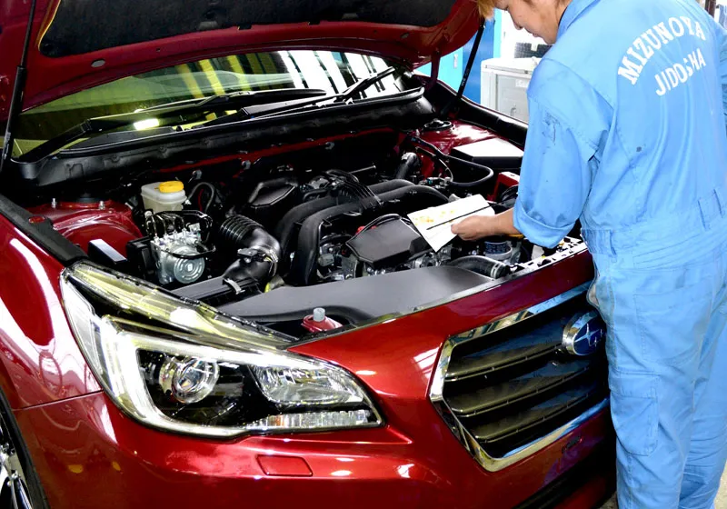

BLOG / NEWS
お知らせ・ブログ
-

ホームページをリニューアルしました
いつも有限会社 水野谷自動車をご利用いただき、誠にありがとうございます。このたびホームページをリニューアルいたしました…
-

車検のご予約はお早めに（矢吹町・認証工場）
国指定の認証工場として、軽自動車から大型車まで車検・整備を承っております。過剰整備をせず、必要な整備を必要なタイミングで…
-

ボディーコーティングで夏の紫外線対策を
VOCを含まない「スーパーガラスコーティング」で、洗練された輝きを長く保ちます。メンテナンスは水洗いだけ…